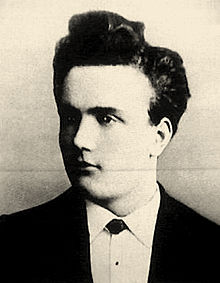

The Mechanical Tele-Vision
(or How the RRG Conquered the World)
Paul Nipkow
German Inventor of Television

Fernseheinheit-sempfänger Telefunken E1
Telefunken receiver from 1933
At the 1936 Berlin Olympics
Television receiver showing a soccer broadcast in a military hospital in 1942.
"The entertainment programs are particularly curious."
"...early reality TV show depicting the wholesome Aryan life of a young German couple for the rest of the population to model themselves on..."
"We'll be able to show whatever we want. We'll create a reality, which the people of Germany need and can copy." - Josef Hebbels
Thank you
Image Sources
- http://uploads.neatorama.com/images/posts/854/88/88854/
- http://www.hawestv.com/
- https://upload.wikimedia.org/wikipedia/commons/
- http://www.scheida.at/scheida/TV_SEITE/
- http://68.media.tumblr.com/ac0e99524ae1b2cffbdfd6a8ccb79265/
- https://s-media-cache-ak0.pinimg.com/736x/ce/8a/15/
- http://www.oldtimeradio.de/Bilder/